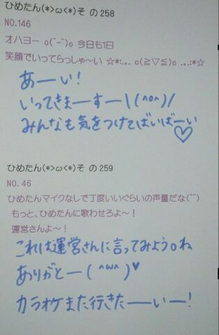
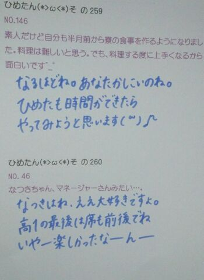

| 2013/05 22 Wed | ひめたん大図鑑45(2012年4 月) |
ひめたん大図鑑とは何か。それは、ひめたんが
受験とかテストとかテストとかテストで
ちょーっと日記書く時間がないぞーって時に
登場する、 いわゆる
「過去の質問返しをまとめたもの」
って感じかな。
過去なので
時制とかおかしなことになる質問も
中にはあるかもだけど、
ま、そゆことなんでね(*^^*)
受験とかテストとかテストとかテストで
ちょーっと日記書く時間がないぞーって時に
登場する、 いわゆる
「過去の質問返しをまとめたもの」
って感じかな。
過去なので
時制とかおかしなことになる質問も
中にはあるかもだけど、
ま、そゆことなんでね(*^^*)

933
 東京での暮らしはもう慣れたカナ?
東京での暮らしはもう慣れたカナ?
ちょっと慣れたかな(^^)
最寄り駅に帰ってきた時に「あ帰ってきた」って思えるようになってきたっ
934
今度NHK杯全国放送コンテストがあるんだけど応援してくれる?
あっもうそんな時期なんじゃね!
大会に出る学生のみなさん頑張ってください(^O^)/
935
 アナウンスかな?それとも朗読?
アナウンスかな?それとも朗読?
ひめたん個人ではアナウンス極めてた!
でも残念ながら個人部門は県大会止まりだったの('・・`)
全国行ったのはテレビとラジオだよ☆こちらはなかなかの好成績でーしたっ
936
車で行きたい場所とか通りたい場所とかってある?
考えてること一緒かもしれないっ。
初めて夜のレインボーブリッジ通ったときに「あらきれい(*^^*)」って思った!
937
第一志望合格したのでご褒美ください...♪
今度会ったとき
ちゅーしちゃうぞっ∩^ω^∩わら
938
結婚式とか行ったことありますか?
ひめたんが幼稚園の時、先生の結婚式行ったかなー。
それぐらい('・・`)
939
友達と交換ノートとか手紙交換とかやったことありますか?
どっちもあるよ☆
ひめたん手紙はマメすぎてtwitterみたいになるから、
ペースについてこれる子は楽しいと思うっ(・∀・)
交換ノートはひめたんが流れを止めるから、あんまオススメはしないかなっわら。
940
どうしてジャッキーを好きになった?
いつだったかな。一目惚れした
いやいや可愛いすぎるでしょ!
941
ファンレター内容薄くても大丈夫かなー??
942
ブログのコメの名前とかも入れた方がわかりやすいのかなσ(^_^;)?
内容はおまかせしますよ♪どんな事でもニコニコ読むと思う(^^)
ブログの名前は、差し支えなければあると嬉しいかな。
「あらいつもありがとう♪」てなるじゃん?
943
まず人のどこを見る?
笑ったおかお見たら一瞬でバリアが取れる!
だからひめたんと会った瞬間笑ってねみんなっ
944
チャームポイントは?見て欲しい所は?
チャームポイントはえくぼ。おめが(ω)
見てほしいのは歌でありダンスであり、パフォーマンス!
945
握手会でいきなりタメ口ってあり(^O^)?
ありっしょ!
だってふぁみりーだもの♪
946
握手会でも質問していいかね?
ばしばし聞いてください(^ω^)
質問うぇるかんむっ
947
1っ下の男子は好きですか??
年なんて関係ない!
好きですよ(//ω//)
948
悩み事とか人に聞いてもらう派?自分で溜め込む派?
断然聞いてもらう派!
だからずるずる落ち込むこととかあんまりない(∀)☆
ひめたんとお友達なったら長話に付き合ってもらうから大変だぞー?
949
いつからアイドルになろうと思ったの??
上手く伝わるといいな('`)
そもそも昔からアイドルになろうって思ってたわけじゃないの...
小4で地元のスクールに入った時から歌やダンス好きだったから
自分のパフォーマンスで誰かを幸せにできたらなーとは思ってたかな♪
アイドルもその夢のひとつ(*^^*)
950
好きな子に告白して思い切りフラれた(;_;)
ひめたんはそこにいたら、慰めてくれる?
そこにいたらもちろん慰めるし
そこにいなくても慰めるよー(;'∩`)
大丈夫?ひめたんがついてるよー?
悲しい時はGReeeeNさんの「涙空」でも聴いたらすっきりするよ?
951
乃木坂は紫色だけどひめたんの好きなピンクのペンライト振ってもいいですか?
ぴんくやあ＼(^O^)／
ぜひ振って振って〜♪
952
 たい焼き食べるとしたら顔から??しっぽから??
たい焼き食べるとしたら顔から??しっぽから??
顔派!
クリームがにょんってなるけど、それでもめげずに顔から☆
953
オタフクソース常備してるの?
ままいわく、調味料の中では一番に買ったらしい(^^)
ので東京のおうちにもばっちり常備☆
お好み焼きだけじゃなくって何にでも合うからね!
オタフクソースは天才!
954
妹のすず香以外に姉妹(兄弟)っている??
お姉ちゃんがおりますよ!
真ん中っ子は一番大変なんだからっ(\'・・`)
955
DSiとかにあるうごメモっていうの知ってる??
DSi持ってないけ詳しくないんよねー。
ゆみ姉(岩瀬佑美子chan)に聞いたらわかるかしら☆?
956
「さわやか」っていうレストラン知ってる?
ほええ初知り!
まいまい(深川麻衣chan)に聞いてみるしかーあっ(・∀・))


はーい今日もみてくれて
ありがとーう( ^ω^ )♪
(＊´・ω・＊)
コメント(121)
2013/05/22 19:24